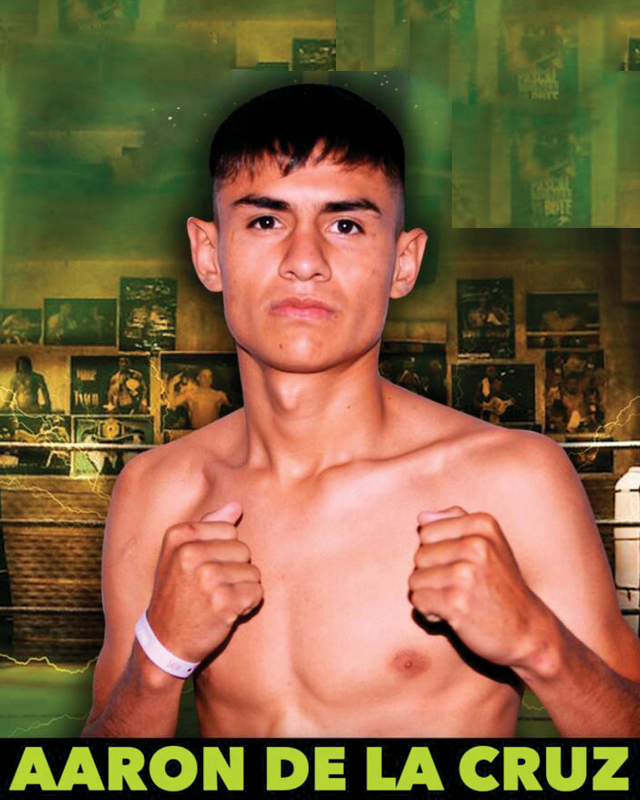

← Nuestros peleadores
Aarón De La Cruz

Chalco, Estado de México · 15-0-0, 10 KO’s
Un peleador de grandes cualidades, tuvo una exitosa carrera en el terreno amateur, decidiéndose a debutar muy joven en el terreno profesional, con apenas 17 años registró su primer triunfo, mostrando un estilo agresivo y efectivo, venciendo a otros prospectos invictos en su camino a la cima con nocauts de gran manufactura; su primera gran oportunidad llegó en agosto de 2025, enfrentando al venezolano Rodrigo ‘El Consentido’ Ramírez en Caracas, pleito que fulminó en un capítulo para ganar el cinto Latino WBA; sumó nocauts sobre los contendientes mundialistas Reyneris Gutiérrez y Luis Lemus para conquistar el título Silver WBC de los minimoscas en septiembre de 2026 con un escalofriante nocaut en un asalto sobre el noqueador colombiano Pedro Alarcón.